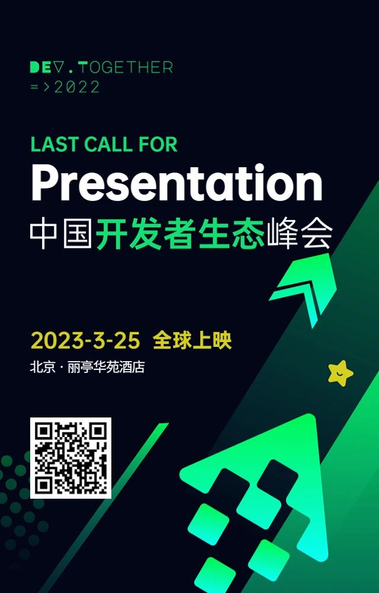

「OSCAR·开源之书·共读」 文章与新闻
Dev.Together 2022 中国开发者生态峰会·读书分论坛
Dev.Together 2022 中国开发者生态峰会上的读书分论坛，关于开发者、共同体以及他们的关系经验分享和累积。
Dev.Together 2022 中国开发者生态峰会确认
万众期待的 Dev.Together 2022 终于重新启动！2023-3-25（周六）第二届中国开发者生态峰会将在北京 · 丽亭华苑酒店举办。[1]
关于 Dev.Together
Dev Together 中国开发者生态峰会是由 SegmentFault 思否发起的，面向 to D Marketing、开发者运营、开发者关系从业者的交流活动。我们希望打破日常工作中来自不同厂商背景给大家带来的交流屏障，在一个中立的平台上，彼此交流学习、开放分享，畅聊走过的路、踩过的坑，携手 Dev Together！

关于读书分论坛
作为大会的特色之一，就是认为从事开发者相关工作的朋友爱学习，爱读书，不仅购买了业界相关的畅销书，还专门和「OSCAR·开源之书·共读」[2]等读书小组商量，共同发起一个相关主题的共读分享会，于是我们发起了如下和开发者、共同体等相关的经典阅读。

议程（持续更新中）
| 时间 | 议项 | 分享者/参与者 | 分享概要 |
|---|---|---|---|
| 13:00～13:15 | 「OSCAR·开源之书·共读」介绍及成员介绍 | 全体参与者 | |
| 13:16 ～～ 14:15 | 《合作的进化》 | tison，夜天之书作者，Apache Member | 用Rust实现“一报还一报”算法策略，来验证开源世界的合作策略。 |
| 14:16 ～～15: 15 | 《开源的核心——为了把事情做好而做好》 | 适兕，作者，「开源之道」主创。 | 适兕一直以来都在推崇理查德·桑内特《匠人》这本书，这次就这本书所表达的观点，和适兕长久以来对开源的观察和学习，看看这种精神究竟是如何影响开源的 ，对于当下的企业、个人而言，这种精神的看重和弘扬，对于发展和进步有多大作用？且听适兕娓娓道来～ |
| 15:16 ～～ 16:15 | 《在所有人看得见的地方工作》读后感 | 卫Sir ，《大教堂与集市》中文译者，公众号“卫Sir说”主笔 | GitHub 作为全球最大的开源项目代码托管平台，本身有着巨大的魔力，且看独立观察者Nidia 是如何调研的，重要的是看卫Sir如何解读。 |
| 16:16 ～～ 17:15 | 开源文化中有没有‘鄙视链’“辩论？ | 庄表伟 vs 适兕 | 等级的发明是为了管理的高效和社会的形成，那么在强调平等的开源世界究竟有没有所谓的你高我低的区分？请听两位从业者是如何看待的？ |
| 17:16 ～～ 18:15 | 《The Art of Community》和《People Powered》 | 林旅强 | Jono Bacon 以Ubuntu community 成功的构建而闻名于业界，后来将他成为独立的咨询师，并总结各种community经验。这两本书就是阶段性的成果，几乎是每位运营人员的必备。听传奇的Richard Lin 如何获得灵感。 |
| 18:16～～18:20 | 合影 | 全体参与者 |
图书/礼品赞助：
「OSCAR· 开源之书·共读」学习共同体代 Fine 购买500元人民币的「开源之书」随机送给来参与的书友。
行为准则：
请遵循 Dev·Togehter 相关规定
请遵守 OSCAR 行为准则
请参考「开源之道」所倡导的方式谈话、行事、社交，以及进行相关事务的处理。
报名方式
请密切关注公众号：开发者生态 以及「OSCAR·开源之书·共读」小组消息。
协助/记录：
- 适兕
参考来源
- https://mp.weixin.qq.com/s/aplBeSjlThadnTeIYtyLOg ，最后访问时间：2023.2.11
- https://osbook.club/ ，最后访问时间：2023.2.11